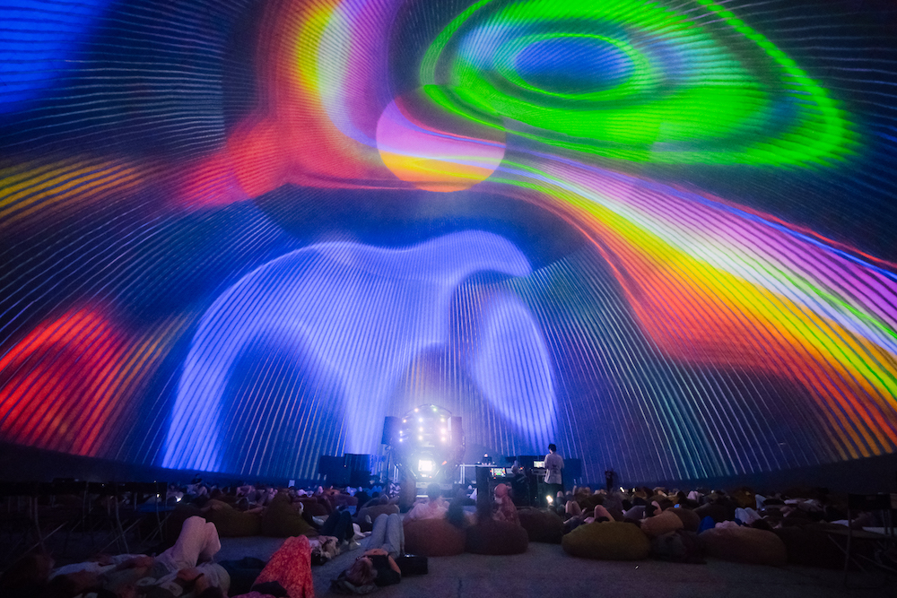
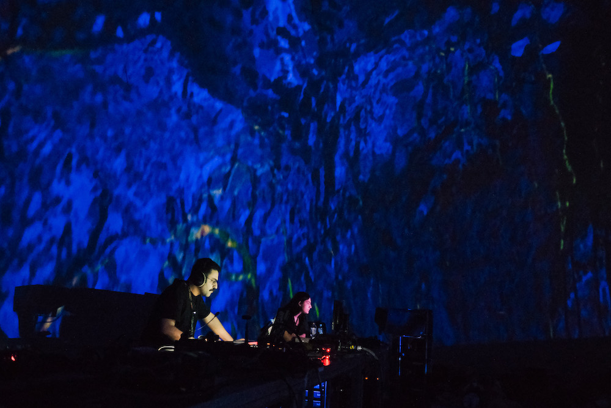
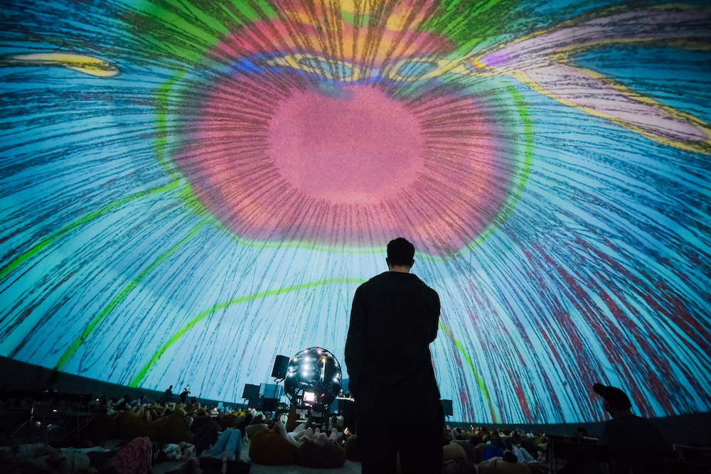

EN / RUS
Space-In-Between
Visuals: Hasmik Badoyan
Music: Arash Azadi
Space In-Between is an audio-visual installation-performance made specifically for the Planetarium 1 in Saint Petersburg. The music is a minimal composition for one multi-layered synthesizer which creates a meditative soundscape over a long chord based on perfect 4th intervals. Over time the notes add on top of each other and get modulated gradually. The visuals mimic ever changing colors and shapes of nature that an attentive observer is familiar with. The whole piece is constantly evolving and transforming in subtle, gentle ways.
  